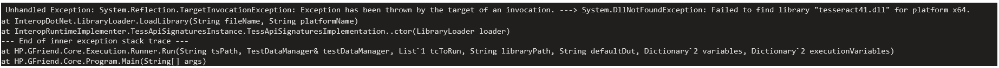

Few users reported : When tried to open Gfriend on machine, even if we double click the exe file or run it as an admin, nothing happened, and there is no process running in the task manager as well and getting below error

It is a known issue as per the link https://github.com/charlesw/tesseract/issues/493
Please install Microsoft Visual C++ Redistributable for Visual Studio 2015, 2017 and 2019 from below link https://support.microsoft.com/en-us/help/2977003/the-latest-supported-visual-c-downloads